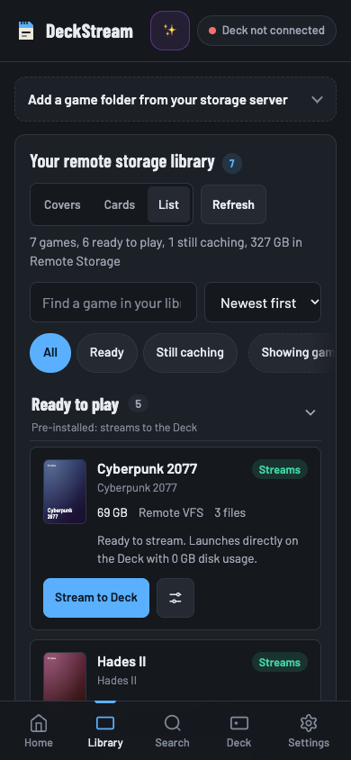
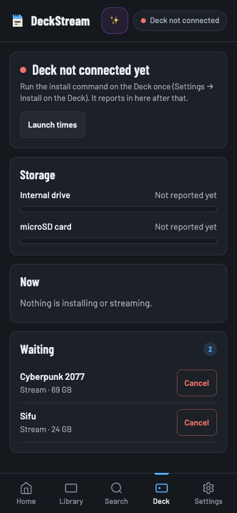

Open-source Steam Deck launcher
Your library lives on your storage.
Queue a PC game from your phone. DeckStream mounts the game folder from your WebDAV storage and runs it locally on your Steam Deck through Proton.


Browse library

Check the queueFrom storage to Steam Deck
Serve your library
Expose authorized game folders from your NAS, Nextcloud or another WebDAV server using the DeckStream storage API.
Queue a game
Choose a folder in the phone companion or the optional Decky panel. Check its progress from the queue.
Launch through Proton
The daemon on the Deck mounts the folder with rclone and caches the data the game reads. The Deck renders the game locally.
Read the setup guide · Storage API requirements · Technical walkthrough
Try it without a Deck
Run the phone companion and a mock library locally with Node.js 22.
git clone https://github.com/hffgzktbcc-blip/deckstream.git
cd deckstream
npm startOpen http://127.0.0.1:8765 to try the library and queue.
What’s been verified
API and browser checks exercise the current own-storage flow with mock storage. An independent clean-device launch is still unconfirmed.
v1.0.0 predates the own-storage changes. Earlier device timings cover the predecessor runtime. LAN NAS performance and game compatibility are still open questions for this revision.
Have a Steam Deck and WebDAV storage?
Try the documented setup with game files you’re authorized to use. Report a successful launch or the first step that fails.
- Record the exact commit, Deck model, SteamOS and Proton versions.
- Include storage type, cache state and the last successful step.
- Remove credentials, private hostnames and identifying details.